中国自然资源图集（高清大图）
Maps of natural resources in China
图集概况
中国自然资源图集，提供高清大图下载，图集内容包括：中国卫星影像图、中国黑土地分布图、中国河流与天然湖泊分布图、中国湿地分布图、中国石漠化土地分布图、中国荒漠化土地分布图、中国冰川变迁图、中国富硒土地资源分布图、中国土壤养分质量等级分布图、中国地下水资源分布图、中国重要地质遗迹分布图、中国煤炭资源分布图等。
地图预览与下载
中国自然资源图集
| 编号 | 图名 | 来源 | 预览 | 下载 |
|---|---|---|---|---|
| 1 | 中国卫星 影像图 | 国土资源部 中国地质调查局 | 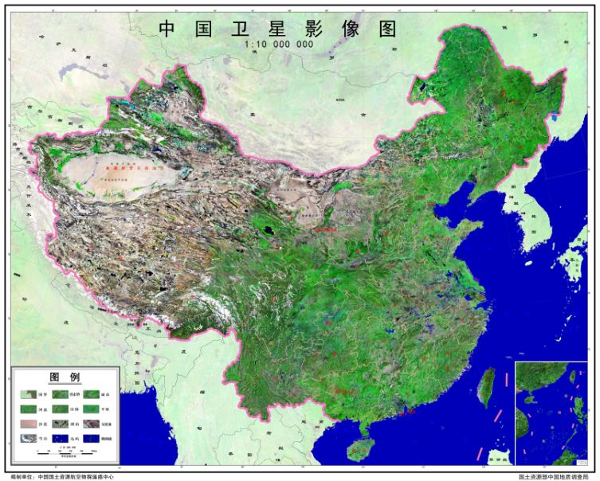 | (点击下载高清图) |
| 2 | 中国黑土地 分布图 | 全国生态地质环境 遥感调查与监测 | 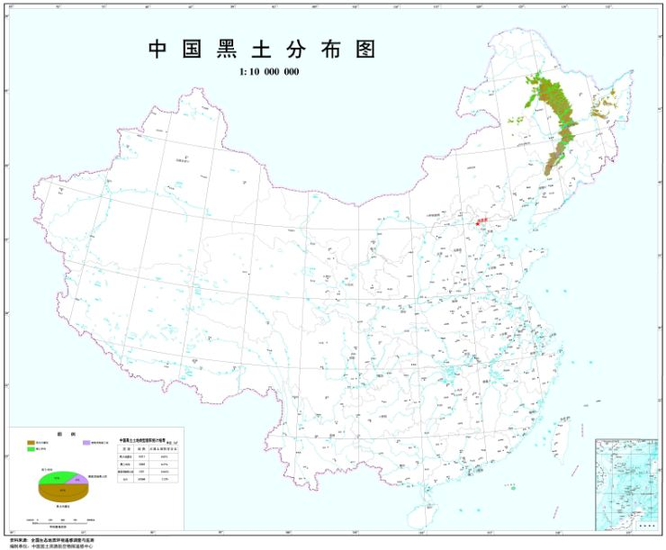 | (点击下载高清图) |
| 3 | 中国河流与 天然湖泊分布图 | 全国生态地质环境 遥感调查与监测 | 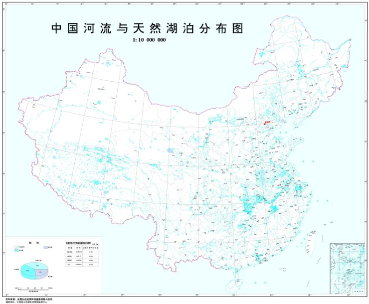 | (点击下载高清图) |
| 4 | 中国湿地 分布图 | 全国生态地质环境 遥感调查与监测 | 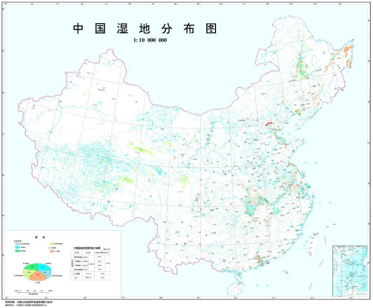 | (点击下载高清图) |
| 5 | 中国石漠化 土地分布图 | 全国生态地质环境 遥感调查与监测 | 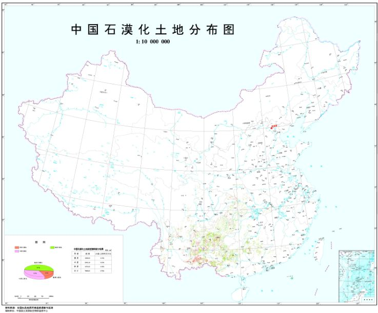 | (点击下载高清图) |
| 6 | 中国荒漠化 土地分布图 | 全国生态地质环境 遥感调查与监测 | 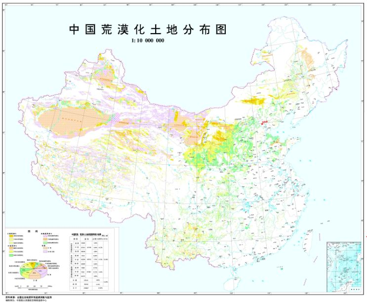 | (点击下载高清图) |
| 7 | 中国冰川 变迁图 | 全国生态地质环境 遥感调查与监测 | 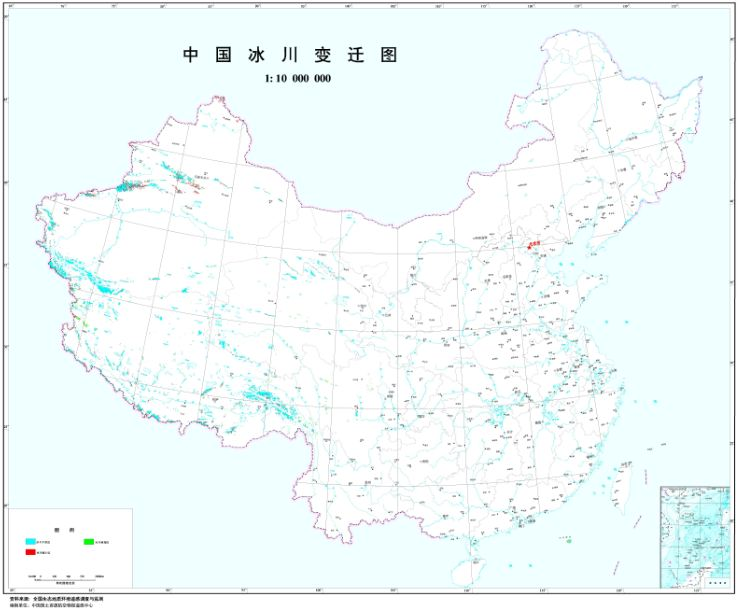 | (点击下载高清图) |
| 8 | 中国富硒土地 资源分布图 | 全国多目标区域 地球化学调查 | 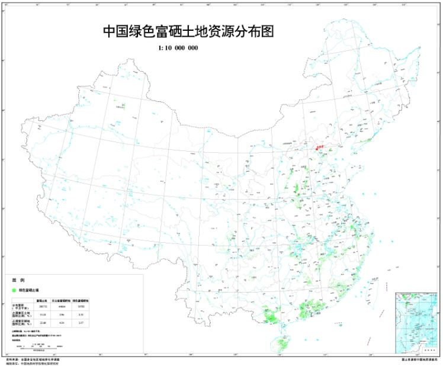 | (点击下载高清图) |
| 9 | 中国土壤养分 质量等级分布图 | 全国多目标区域 地球化学调查 | 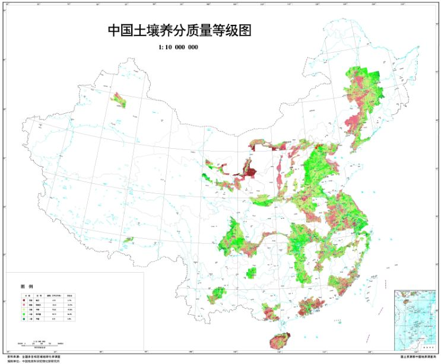 | (点击下载高清图) |
| 10 | 中国地下水 资源分布图 | 新一轮全国地下水 资源调查成果 | 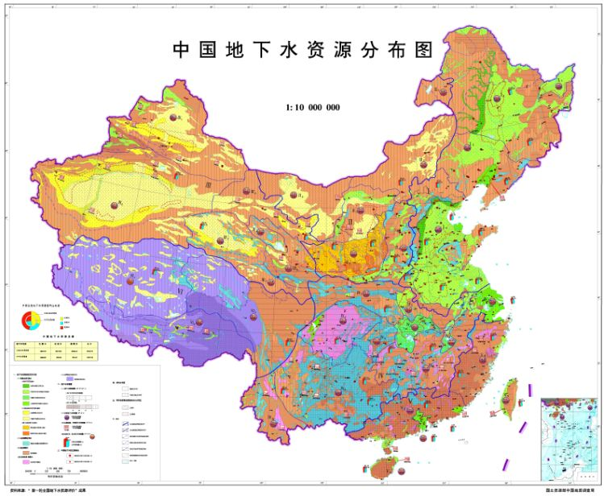 | (点击下载高清图) |
| 11 | 中国重要地质遗迹 分布图 | 重要地质遗迹 调查评价成果 | 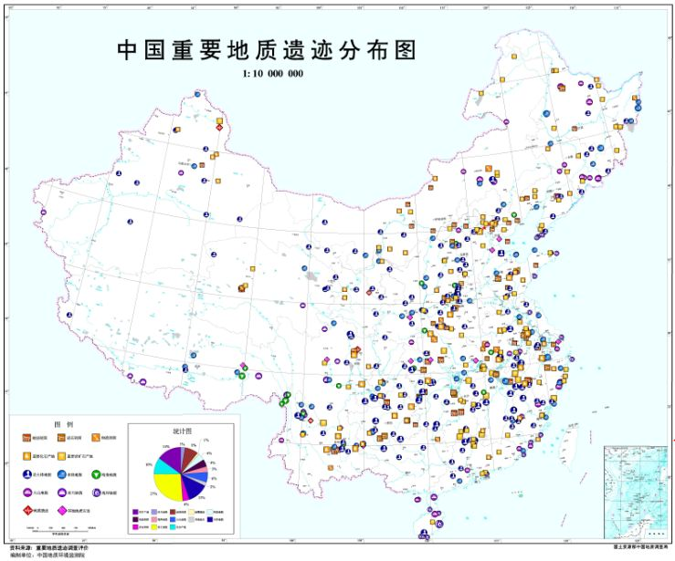 | (点击下载高清图) |
| 12 | 中国煤炭 资源分布图 | 国土资源部 中国地质调查局 | 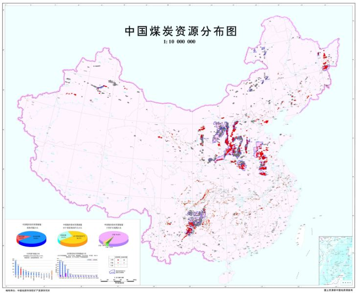 | (点击下载高清图) |
如果遇到任何数据问题，如数据下载问题、解压问题、文件损坏等，请在下方评论区留言，或邮件联系，我将及时答疑或更新，十分感谢您的支持~
建议使用Google浏览器，IE内核浏览器可能不正常显示下载按钮等！
Fighting, GISer!
最新博文